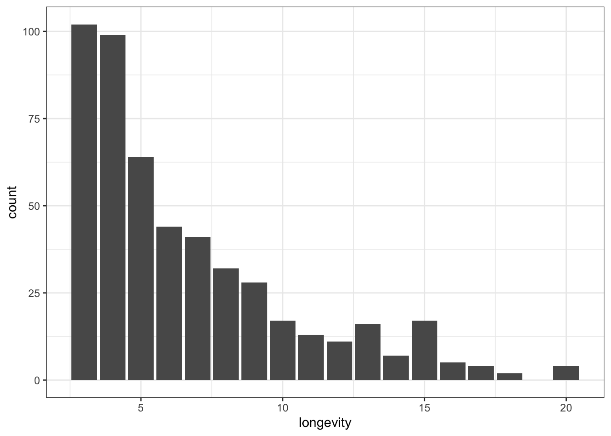
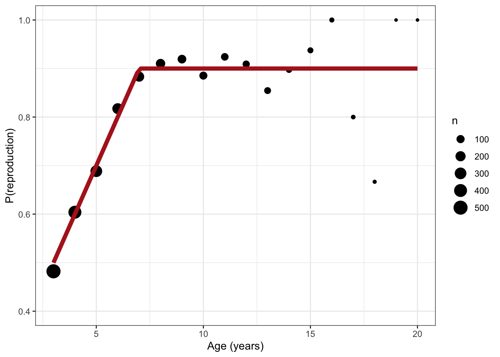
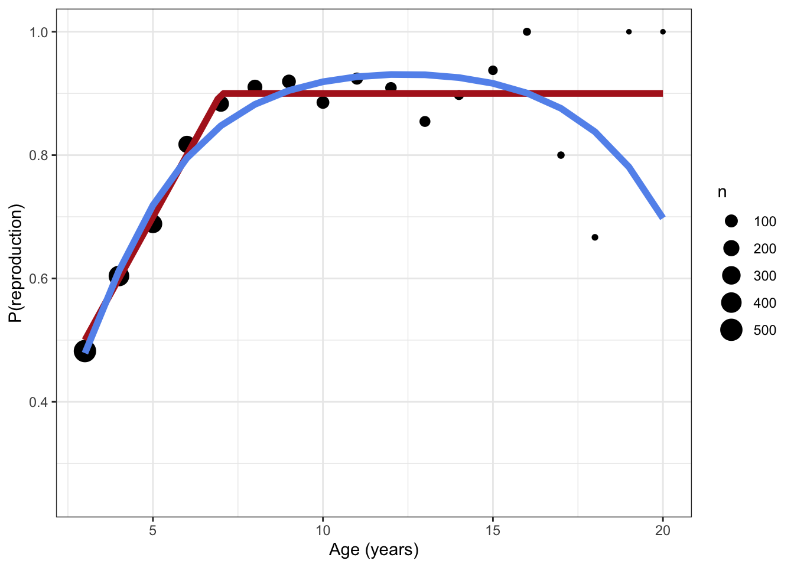
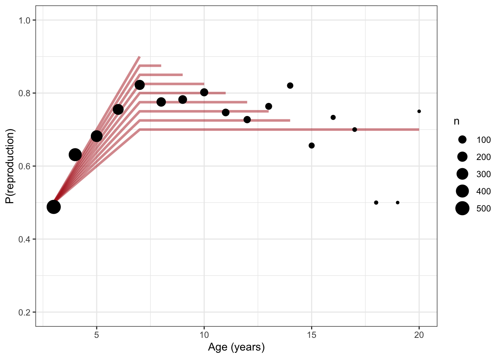
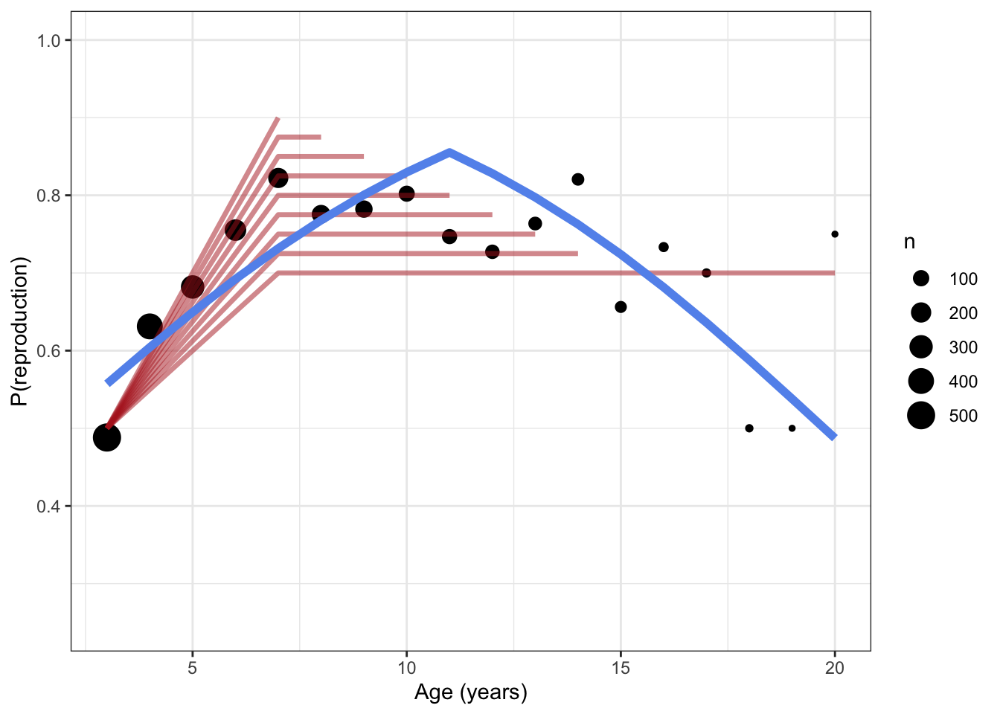

Code
library(tidyverse)
theme_set(theme_bw())
set.seed(123)
se_prop <- function(p, n) sqrt(p * (1 - p) / n)library(tidyverse)
theme_set(theme_bw())
set.seed(123)
se_prop <- function(p, n) sqrt(p * (1 - p) / n)Significant results can trick you into believing there’s evidence to support your hypothesis if your model is a bad fit for the system.
Here’s a demonstration of polynomial regression creating the illusion of senescence.
Let’s make two assumptions. (1) Reproductive probability increases in young age classes (i.e., development) followed by a plateau. (2) Sample sizes of younger seals are much larger than older seals. These are both totally reasonable assumptions! We will see that quadratic models create symmetry, so the large sample size during development forces the model to predict a decline at older ages (i.e., to infer senescence) even though no senescence has occurred!!
First, let’s randomize the seals’ lifespans. For simplicity, assume a fixed annual survival of 80% and filter out any animals that lived less than 3 or more than 20 years.
# Set annual survival to be a fixed 0.8
seal_lifespans <- tibble(
longevity = rgeom(1e3, prob = 1 - 0.8)
) %>%
filter(between(longevity, 3, 20))
ggplot(seal_lifespans, aes(longevity)) +
geom_bar()
Then, simulate each reproductive year in the seals’ lives. We will have reproductive probability increase from 0.5 to 0.9 over ages 3 to 7, then plateaus at 0.9 until death.
prime_age <- 7
max_prob <- 0.9
min_prob <- 0.5
prob_by_age <- function(a) {
ifelse(a <= prime_age,
min_prob + (max_prob - min_prob) * (a - 3) / (prime_age - 3),
max_prob)
}
seals_annual <- map(
seal_lifespans$longevity,
\(l) {
tibble(age = seq(3, l),
repro_prob = prob_by_age(age),
repro = rbinom(length(age), size = 1, prob = repro_prob))
}
) %>%
list_rbind()
seals_annual %>%
group_by(age) %>%
summarize(mean_repro = mean(repro),
n = n()) %>%
# Note: add error bars
ggplot(aes(age, mean_repro)) +
geom_point(aes(size = n)) +
stat_function(fun = prob_by_age, color = "firebrick", linewidth = 2) +
scale_x_continuous("Age (years)") +
scale_y_continuous("P(reproduction)", limits = c(0.4, 1))
Hey look, the quadratic model coefficients were all significant and the model predicts senescence. Because we simulated this population and know exactly how it works, we know the apparent senescence is actually a consequence of the quadratic model’s symmetry constraint.
poly_mod <- glm(repro ~ poly(age, 2),
family = binomial(link = "logit"),
data = seals_annual)
summary(poly_mod)
Call:
glm(formula = repro ~ poly(age, 2), family = binomial(link = "logit"),
data = seals_annual)
Coefficients:
Estimate Std. Error z value Pr(>|z|)
(Intercept) 1.14580 0.05457 20.997 < 2e-16 ***
poly(age, 2)1 39.81540 2.95371 13.480 < 2e-16 ***
poly(age, 2)2 -21.09045 2.59881 -8.115 4.84e-16 ***
---
Signif. codes: 0 '***' 0.001 '**' 0.01 '*' 0.05 '.' 0.1 ' ' 1
(Dispersion parameter for binomial family taken to be 1)
Null deviance: 2762.6 on 2338 degrees of freedom
Residual deviance: 2433.0 on 2336 degrees of freedom
AIC: 2439
Number of Fisher Scoring iterations: 4poly_pred <- tibble(age = seq(min(seals_annual$age),
max(seals_annual$age))) %>%
mutate(repro_prob = predict(poly_mod,
newdata = .,
type = "response"))
seals_annual %>%
group_by(age) %>%
summarize(mean_repro = mean(repro),
n = n()) %>%
# Note: add error bars
ggplot(aes(age, mean_repro)) +
geom_point(aes(size = n)) +
stat_function(fun = prob_by_age, color = "firebrick", linewidth = 2) +
geom_line(aes(y = repro_prob),
poly_pred,
color = "cornflowerblue",
linewidth = 2) +
scale_x_continuous("Age (years)") +
scale_y_continuous("P(reproduction)", limits = c(0.25, 1))
Ok, a different way a model can trick us. Let’s once again assume every seal’s reproductive probability develops from age 3 to 7. BUT each seal reaches a different plateau, related to their longevity. Seals that live a long time reach a lower plateau (i.e., a trade off between longevity and reproduction). So no senescence because individuals’ probabilities of reproduction aren’t decreasing, but animals that live longer tend to reproduce less often. This process is called selective disappearance.
We’ll keep the same life spans as before. In this simulation, reproductive probability increases from 0.5 at age 3 to p at age 7, where p is 0.9 for animals with longevity 7 or less and 0.7 for animals with longevity 15 or more. In the figure below, the red lines indicate the annual reproductive probability for seals of different longevities.
prob_age3 <- 0.5
plateau_age1 <- 7
plateau_long1 <- 0.9
plateau_age2 <- 15
plateau_long2 <- 0.7
prob_by_longevity <- function(a, l) {
plateau <- approx(x = c(plateau_age1, plateau_age2),
y = c(plateau_long1, plateau_long2),
xout = l,
rule = 2)$y
p <- approx(x = c(3, plateau_age1),
y = c(prob_age3, plateau),
xout = a,
rule = 2)$y
p
}
prime_age <- 11
seals_annual2 <- map(
seal_lifespans$longevity,
\(l) {
tibble(age = seq(3, l),
age2 = age - prime_age,
age_cat = ifelse(age2 <= 0,
"Pre-senescent",
"Senescent"),
repro_prob = map2_dbl(age, l, prob_by_longevity),
repro = rbinom(length(age), size = 1, prob = repro_prob))
}
) %>%
list_rbind()
repro_probs <- map(
plateau_age1:plateau_age2,
\(l) {
tibble(longevity = factor(l),
age = seq(3, l),
p = map2_dbl(age, l, prob_by_longevity))
}
) %>%
list_rbind()
repro_probs$age[repro_probs$age == 15 &
repro_probs$longevity == 15] <- 20
seals_annual2 %>%
group_by(age) %>%
summarize(mean_repro = mean(repro),
n = n()) %>%
# Note: add error bars
ggplot(aes(age, mean_repro)) +
geom_line(aes(y = p, group = longevity),
repro_probs,
color = "firebrick",
linewidth = 1.2,
alpha = 0.5) +
geom_point(aes(size = n)) +
scale_x_continuous("Age (years)") +
scale_y_continuous("P(reproduction)", limits = c(0.2, 1))
Once again, every model parameter was significant. But our model infers senescence where there isn’t any because it doesn’t fit our system properly. The apparent senescence is due to a change in the population composition at older ages (i.e., only infrequent breeders survive to advanced age), not due to senescence at the individual level.
disappear_mod <- glm(repro ~ age2 : age_cat,
family = binomial(link = "logit"),
data = seals_annual2)
summary(disappear_mod)
Call:
glm(formula = repro ~ age2:age_cat, family = binomial(link = "logit"),
data = seals_annual2)
Coefficients:
Estimate Std. Error z value Pr(>|z|)
(Intercept) 1.77645 0.12439 14.282 < 2e-16 ***
age2:age_catPre-senescent 0.19332 0.02026 9.541 < 2e-16 ***
age2:age_catSenescent -0.20307 0.04953 -4.100 4.13e-05 ***
---
Signif. codes: 0 '***' 0.001 '**' 0.01 '*' 0.05 '.' 0.1 ' ' 1
(Dispersion parameter for binomial family taken to be 1)
Null deviance: 2952.5 on 2338 degrees of freedom
Residual deviance: 2852.5 on 2336 degrees of freedom
AIC: 2858.5
Number of Fisher Scoring iterations: 4disappear_pred <- tibble(age = seq(min(seals_annual2$age),
max(seals_annual2$age)),
age2 = age - prime_age,
age_cat = ifelse(age2 <= 0,
"Pre-senescent",
"Senescent")) %>%
mutate(repro_prob = predict(disappear_mod,
newdata = .,
type = "response"))
seals_annual2 %>%
group_by(age, age_cat) %>%
summarize(mean_repro = mean(repro),
n = n(),
.groups = "drop") %>%
# Note: add error bars
ggplot(aes(age, mean_repro)) +
geom_point(aes(size = n)) +
geom_line(aes(y = p, group = longevity),
repro_probs,
color = "firebrick",
linewidth = 1.2,
alpha = 0.5) +
geom_line(aes(y = repro_prob),
disappear_pred,
color = "cornflowerblue",
linewidth = 2) +
scale_x_continuous("Age (years)") +
scale_y_continuous("P(reproduction)", limits = c(0.25, 1))